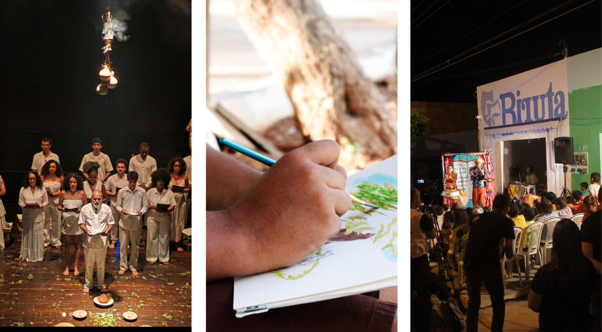

Nasci em Juazeiro, na Bahia, mas vivi a vida inteira em Petrolina, Pernambuco. Certa vez, durante a apresentação de um trabalho em Salvador, mencionei esse fato. Com certa desconfiança, alguém me perguntou se aquilo era uma piada. Respondi com outra pergunta: por que seria?
Petrolina e Juazeiro ficaram imortalizadas nos versos da canção Petrolina-Juazeiro, composta por Jorge de Altinho: “Petrolina, Juazeiro; Juazeiro, Petrolina. Todas as duas eu acho uma coisa linda”. A música traduz, em poucas palavras, a proximidade entre duas cidades que, embora pertençam a estados diferentes, compartilham muito mais do que uma paisagem. Ainda assim, para quem olha de fora, essa relação nem sempre parece tão evidente. Talvez porque as fronteiras políticas insistam em separar aquilo que a vida cotidiana aproxima.
Minha história entre essas duas margens não tem nada de extraordinário para quem cresceu por aqui. Meu nascimento, assim como o de tantas outras pessoas da minha geração, também atravessa um período de dificuldades na saúde pública de Petrolina, quando nascer em uma cidade e buscar atendimento na outra se tornou parte da realidade de muitas famílias.
É assim que se vive entre Petrolina e Juazeiro: cidades separadas por uma divisa estadual, mas aproximadas pelo Rio Opará, também conhecido como São Francisco, e por uma vida cotidiana que não cabe nas fronteiras dos mapas. Quando falta algo de um lado, atravessa-se a ponte para buscar do outro. Trabalha-se em uma cidade, estuda-se na outra e constroem-se afetos, histórias e pertencimentos que circulam entre as duas margens. Somos pernambaianos, PEBA's, como gostamos de dizer. E não há contradição nisso.
A arte produzida neste território também atravessa pontes, margens e fronteiras. Artistas, coletivos, grupos culturais e iniciativas independentes constroem suas trajetórias em meio a essas trocas, criando formas próprias de expressar o lugar onde vivem. Entre Petrolina e Juazeiro, a produção artística não se limita aos equipamentos culturais, aos palcos ou às galerias: ela também ocupa ruas, escolas, bairros periféricos, espaços comunitários e territórios onde a criação se torna uma possibilidade de encontro, reconhecimento e transformação.
Olhar para essa produção é também reconhecer que o Semiárido não se resume à paisagem da seca, à escassez ou às imagens historicamente associadas ao sertão. Há outras narrativas sendo construídas por quem vive aqui. Narrativas que passam pelo teatro, pela música, pelas artes visuais, pela dança, pelo audiovisual, pela literatura e por tantas outras linguagens. São expressões que reivindicam o direito de contar a própria história, questionar representações estabelecidas e produzir imagens diferentes sobre o Nordeste e sobre si mesmas.
Mas essas manifestações não surgiram de maneira isolada, tampouco começaram a existir quando passaram a receber reconhecimento institucional. Há uma trajetória de artistas, mestres, grupos, movimentos e espaços culturais que, em diferentes momentos, abriram caminhos para que outras formas de criação encontrassem lugar neste território.
Como nenhuma história começa exatamente onde a gente decide contá-la, compreender as expressões artísticas que existem hoje entre essas duas margens exige reconhecer os caminhos que vieram antes, as memórias que permanecem e as histórias que nem sempre encontraram espaço para serem narradas. É também uma oportunidade de questionar quem teve o direito de representar o sertão, quais imagens foram legitimadas e quais experiências permaneceram à margem dessas narrativas.
Por isso, peço licença a quem veio antes de mim. Esta reportagem nasce também da minha experiência de viver entre essas duas cidades, de reconhecer neste território parte da minha identidade e de compreender a arte como uma das maneiras pelas quais construímos nossas próprias formas de existir. Não se trata de contar uma história definitiva sobre a cultura de Petrolina e Juazeiro, mas de percorrer algumas das muitas histórias que a constituem, dando espaço a quem cria, resiste, experimenta e transforma o lugar que chama de casa.
Esta é uma tentativa de acompanhar a correnteza dessas narrativas: reconhecer suas origens, encontrar seus percursos e escutar as vozes que seguem movimentando a arte e a identidade no Vale do São Francisco.
À margem dos equipamentos oficiais:
as histórias que nem sempre encontraram espaço para serem narradas

A história cultural de Petrolina e Juazeiro não começa com a inauguração de um teatro, a criação de uma secretaria de governo ou a publicação de um edital. Antes que os equipamentos culturais passassem a integrar a paisagem das duas cidades, já existiam pessoas organizando festivais, montando espetáculos, criando cineclubes, promovendo encontros e inventando maneiras de fazer a arte circular pelo Sertão.
Parte dessa história não está nos prédios. Está nas lembranças de quem participou dos movimentos, nas fotografias guardadas, nos jornais antigos, nos documentos que sobreviveram ao tempo e nas narrativas transmitidas entre diferentes gerações de artistas.
Reconstruir essa trajetória exige olhar para além das instituições. É preciso compreender também as transformações de um território atravessado por disputas econômicas, mudanças políticas e diferentes formas de organização social. Afinal, enquanto o Vale do São Francisco era apresentado como uma região de potencial desenvolvimento, seus habitantes também construíam outras maneiras de interpretar, ocupar e representar o lugar onde viviam.
O TERRITÓRIO EM TRANSFORMAÇÃO
Nos anos 1970, Petrolina, em Pernambuco, e Juazeiro, na Bahia, passaram por transformações importantes. Durante a Ditadura Militar (1964–1985), o governo brasileiro intensificou projetos de modernização econômica, e o Vale do São Francisco passou a ocupar posição estratégica nas políticas de desenvolvimento nacional.
A irrigação e a expansão agrícola modificaram a paisagem, as relações de trabalho e a economia regional. Em 16 de julho de 1974, foi criada a Companhia de Desenvolvimento dos Vales do São Francisco e do Parnaíba (Codevasf), que sucedeu à Superintendência do Vale do São Francisco (Suvale). A instituição tinha como uma de suas principais frentes o aproveitamento econômico dos recursos hídricos e o desenvolvimento de projetos de irrigação.
O rio, que há gerações sustentava atividades como pesca, navegação e agricultura, também passou a ser compreendido como infraestrutura estratégica para a expansão econômica. Essa transformação, entretanto, não aconteceu sem conflitos.
Construção da Barragem de Sobradinho.
A construção da Barragem de Sobradinho, iniciada em 1971 e concluída em 1978, provocou o deslocamento compulsório de mais de 72 mil pessoas e a desapropriação de aproximadamente 26 mil propriedades. As antigas sedes de Casa Nova, Sento Sé, Remanso e Pilão Arcado foram atingidas pela formação do lago.
Para milhares de famílias, o desenvolvimento significou deixar para trás casas, terras, relações comunitárias e referências afetivas. A modernização que redesenhava o território também produzia rupturas que nem sempre apareciam nas narrativas oficiais sobre o progresso.
É nesse contexto que a memória se torna uma questão política. Preservar histórias, registrar experiências e garantir que diferentes grupos pudessem narrar suas próprias vivências era também uma forma de enfrentar o apagamento.
Memórias das mobilizações sociais na região.
A atuação de Dom José Rodrigues à frente da Diocese de Juazeiro e a organização de trabalhadores rurais, com a participação da Comissão Pastoral da Terra, criada em 1975 em âmbito nacional, integraram esse processo de mobilização social. As lutas pelo território, pela terra e pelos direitos das comunidades atravessavam a vida regional.
A cultura também estava inserida nesse cenário de disputas. Em um país submetido à censura e à vigilância política, artistas, estudantes e intelectuais precisavam encontrar caminhos para produzir, circular e compartilhar suas ideias.
A ARTE ANTES DOS EQUIPAMENTOS
Em Juazeiro, parte dessa movimentação pode ser recuperada por meio das memórias de Antônio Carlos Coêlho de Assis, conhecido como Coelhão, reunidas no livro Juazeiro de perto: uma mistura de arte, cultura e política, publicado em 2021.
Antônio Carlos Coêlho de Assis, conhecido como Coelhão.
Segundo Coelhão, a cultura em Juazeiro foi construída através das experiências de grupos, associações e movimentos que atuaram a partir da década de 1970. Entre eles está a Associação dos Universitários de Juazeiro (AUJ), cuja primeira formação surgiu em 1970.
A associação reunia estudantes juazeirenses que cursavam o ensino superior em cidades como Salvador, capital baiana. A proposta era fazer retornar à comunidade parte do conhecimento adquirido fora do município, por meio de projetos sociais, culturais e artísticos.
Festivais de música, exposições e gincanas e iniciativas que faziam parte desse esforço. O Festival São Franciscano da Canção, que hoje se chama Festival Edesio Santos e está na 28° edição e o Salão de Artes Plásticas PRO-ARTE, ambos realizados em 1972, também integraram essa movimentação.
No mesmo período, o Grupo Êxodus reuniu artistas de diferentes linguagens, entre atores, músicos, poetas e artistas plásticos. Mais do que produzir apresentações, essas iniciativas procuravam estabelecer relações entre a arte e os acontecimentos que atravessavam a cidade.
A movimentação não se limitava à realização de eventos. Tratava-se de construir um circuito cultural próprio, em uma época em que as oportunidades de formação e circulação artística no interior eram mais restritas.
Círculo Operário de Juazeiro.
Em março de 1980, o Círculo de Convivência Cultural lançou um manifesto que defendia a pesquisa, a experimentação, a troca de informações e o incentivo à produção literária. A iniciativa procurava aproximar diferentes áreas do conhecimento e criar um ambiente de convivência entre artistas e intelectuais.
Na década seguinte, a articulação entre cultura e participação política ganhou novas expressões. Em 1983, o Centro de Cultura e Debate passou a reunir artistas, professores e produtores culturais no Círculo Operário de Juazeiro. O espaço recebeu ensaios teatrais, exposições e discussões sobre os rumos da cidade.
Em 1984, a mobilização em defesa do Rio São Francisco também aproximou diferentes grupos. Depois de um episódio de mortandade de peixes associado ao lançamento de resíduos industriais no rio, o Movimento de Defesa do São Francisco organizou atividades de mobilização e conscientização ambiental.
Naquele mesmo período, o Cineclube Angarís ampliou as possibilidades de acesso ao audiovisual, promovendo sessões de filmes fora da programação comercial. O cinema se tornava também um espaço de encontro, formação de público e discussão.
A segunda formação da AUJ, entre 1983 e 1984, assumiu uma atuação mais explicitamente política e participou da articulação de um comitê suprapartidário pelas Diretas Já.
A cultura não estava isolada das questões que atravessavam a população. O teatro, a música, a literatura e o cinema também são formas de discutir a cidade, defender o território e construir espaços de participação.
MEMÓRIAS DO VALE EM CENA
A história das artes cênicas de Petrolina e Juazeiro possui uma característica particular: ela não respeita os limites administrativos que separam Pernambuco e Bahia. Artistas, grupos, professores e espectadores circulam entre as duas cidades, construindo uma cena que tem o rio como elemento de aproximação.
Thom Galiano.
Uma das pessoas que se dedica a investigar e preservar essa trajetória é Thom Galiano, diretor teatral, professor e integrante da Trup Errante. Sua atuação está ligada à formação de artistas e à pesquisa das artes cênicas no Vale do São Francisco.
Recentemente Thom desenvolveu um livro em torno do projeto Memórias do Vale em Cena onde reuniu vestígios dessa história: documentos, fotografias, entrevistas, cronologias e relatos de pessoas que participaram da construção do teatro regional.
Existem experiências que sobreviveram principalmente porque alguém guardou uma fotografia, registrou uma apresentação ou se dispôs a contar o que aconteceu.
Thom Galiano fala sobre a dimensão política presente em parte das experiências de formação teatral desenvolvidas na cidade. Ao falar sobre o espetáculo Andamos Todos Iguais, adaptação de Bailei na Curva, de Júlio Conte, ele lembra uma montagem que abordava a Ditadura Militar, desde o golpe até a redemocratização.
A memória política também atravessou outros trabalhos dirigidos por Galiano. Em Procura-se um corpo: Ação nº 3, desenvolvido pelo Núcleo de Teatro do Sesc Petrolina, histórias de pessoas perseguidas pela Ditadura Militar foram transformadas em experiência cênica e posteriormente reunidas em publicação.
“Acredito que a gente vive hoje uma guerra, inclusive em relação à narrativa”.
Thom Galiano
A observação ajuda a compreender por que recuperar a história cultural de uma região é também uma forma de intervenção no presente. Aquilo que se escolhe registrar, preservar ou deixar de fora interfere diretamente na maneira como uma sociedade reconhece sua própria trajetória.
QUEM PODE OCUPAR OS ESPAÇOS CULTURAIS?
Em novembro de 1986, Juazeiro ganhou um equipamento que se tornaria uma referência para a produção artística regional: o Centro de Cultura João Gilberto, inaugurado pelo Governo da Bahia.
A implantação do espaço representou um avanço na estrutura cultural do município. Ao longo dos anos, o Centro passou a receber diferentes linguagens artísticas e se tornou lugar de encontro para artistas de várias gerações.
Mas a existência de um equipamento público não significa, automaticamente, que todas as pessoas consigam acessá-lo ou se reconhecer nele. Localizado na região central de Juazeiro, o Centro impõe dificuldades de deslocamento para artistas e jovens que vivem em bairros mais distantes.
Para Odilon Neto, que integra o coletivo Abdias, formado majoritariamente por pessoas da periferia de Juazeiro, essa distância revela um problema que vai além do transporte: a concentração dos equipamentos culturais em determinadas áreas da cidade limita as possibilidades de criação e participação de quem vive em outros territórios.
O Centro de Cultura João Gilberto acaba sendo uma das poucas referências com uma infraestrutura mais completa. Por isso, Odilon defende que a política cultural também precisa chegar aos bairros, com a criação de espaços físicos equipados onde os jovens possam se reunir, desenvolver suas produções e construir suas próprias experiências artísticas sem depender exclusivamente do deslocamento até o centro da cidade.
Em Petrolina, essa questão também atravessou a relação entre artistas e espaços de apresentação. Para quem vivia em bairros distantes do centro, frequentar um teatro poderia envolver dificuldades de transporte, dinheiro e acesso à programação.
A distância não era apenas geográfica. Também envolvia a percepção de quem tinha o direito de ocupar determinados espaços e de quais manifestações eram reconhecidas como parte da vida cultural da cidade.
É uma questão que aparece na trajetória de Antônio Veronaldo, ator, diretor, dramaturgo e cofundador da Cia. Biruta de Teatro. Natural de Picos, no Piauí, o artista construiu em Petrolina uma trajetória diretamente relacionada à produção cultural nas periferias.
Em 2008, junto a Cristiane Crispim, participou da criação da Cia. Biruta, que estabeleceu suas atividades no bairro São Gonçalo, na zona oeste de Petrolina.
Antes de contar com um equipamento cultural de referência nas proximidades, o grupo precisou construir suas próprias condições de funcionamento. A Budega, um ponto comercial alugado e utilizado como primeira sede, tornou-se um lugar de ensaio, criação e convivência.
A decisão de desenvolver atividades no próprio bairro também significava questionar a ideia de que a produção artística precisava estar concentrada no centro da cidade.
Veronaldo conta que, durante uma audição para um dos primeiros espetáculos da companhia, perceberam que muitos dos interessados em participar eram moradores da mesma região periférica que os integrantes.
A percepção provocou uma mudança na maneira como o grupo compreendia sua própria produção. Uma das bases da investigação artística da Cia Biruta é que “a maior característica da cultura popular é ser local, de fazer parte de uma vivência comunitária”, afirma Veronaldo.
A partir dessa compreensão, a companhia passou a investigar referências culturais presentes no cotidiano do território: os corpos, as tradições populares, as histórias ribeirinhas e as experiências de quem vive às margens do São Francisco.
Essa pesquisa aparece em trabalhos como Chico e Flor contra os monstros da Ilha do Fogo, espetáculo criado a partir das lendas e tradições orais relacionadas ao rio. Ao falar sobre a montagem, Veronaldo explicou que as lendas serviam como ponto de partida para construir uma poética ribeirinha e estabelecer relações com questões contemporâneas, como a degradação ambiental e o desenvolvimento não sustentável.
A experiência da companhia fala sobre a periferia sertaneja como um lugar de criação, pesquisa, elaboração estética e produção de conhecimento.
A reivindicação por espaços culturais nas periferias também passa pela possibilidade de criar, manter e financiar iniciativas que nascem nesses territórios. Afinal, não basta que os artistas consigam chegar aos espaços existentes: é preciso que tenham condições de produzir, circular e dar continuidade ao próprio trabalho.
FINANCIAR A CULTURA, GARANTIR O ACESSO
A partir dos anos 1990, os mecanismos de financiamento cultural passaram por mudanças importantes no Brasil. A criação de programas estaduais de incentivo e fundos específicos ampliou as possibilidades de apoio a projetos artísticos, embora o acesso aos recursos continuasse condicionado a exigências administrativas e técnicas.
Na Bahia, o Fazcultura foi instituído em 1996, por meio de incentivo fiscal vinculado ao ICMS. Em Pernambuco, o Sistema de Incentivo à Cultura, que inclui o Funcultura, foi instituído pela Lei nº 12.310, de 19 de dezembro de 2002. Já o Fundo de Cultura do Estado da Bahia foi criado pela Lei nº 9.431, de 11 de fevereiro de 2005.
Esses mecanismos estabeleceram diferentes formas de participação do poder público no financiamento da produção cultural.
Entretanto, a existência de recursos não significa que todos os agentes culturais tenham as mesmas condições de disputá-los. Elaborar projetos, reunir documentação, manter uma estrutura administrativa e prestar contas exige conhecimentos e tempo que nem sempre estão disponíveis para coletivos independentes e grupos periféricos.
A profissionalização da gestão passou a integrar o cotidiano de quem desejava garantir a continuidade de suas atividades. Para muitos artistas, produzir cultura significava também aprender a lidar com formulários, inscrições, contrapartidas e processos burocráticos.
A institucionalização, contudo, não substituiu as práticas independentes. Muitos grupos continuaram produzindo com recursos próprios, parcerias, trabalho voluntário e ocupação de espaços comunitários.
O financiamento público tornou-se uma possibilidade de ampliação, mas não a origem de toda a produção artística regional.
Em Juazeiro, essa disputa também acontece no campo das políticas públicas. Se, de um lado, os coletivos reivindicam espaços onde possam desenvolver suas atividades, de outro, enfrentam entraves para acessar os recursos que deveriam fortalecer a produção cultural do município.
A MOBILIZAÇÃO DE NOVEMBRO DE 2026
Na manhã de 12 de novembro de 2026, artistas, produtores culturais e conselheiros ocuparam a Praça da Bandeira, no centro de Juazeiro (BA), e seguiram em cortejo até a sede da Secretaria de Cultura, Esporte e Lazer (Seculte), no Paço Municipal. O protesto ocorreu um dia depois de integrantes do Fórum Permanente de Cultura de Juazeiro e conselheiros da sociedade civil denunciarem, por meio de notas públicas e vídeos nas redes sociais, a paralisia administrativa na execução das políticas culturais do município.
REGISTRO DO CORTEJO / 12 DE NOVEMBRO DE 2026
A mobilização expôs um paradoxo enfrentado por quem produz arte no Vale do São Francisco: os recursos federais de fomento existem, mas podem encontrar obstáculos nos trâmites burocráticos locais antes de chegar aos coletivos. Se, nos anos 1970, o desafio era criar circuitos próprios diante da inexistência de estruturas municipais, em 2026 a disputa dos trabalhadores da cultura também passa por destravar a máquina pública, garantir a execução dos editais e fortalecer os espaços de participação social.
Na margem baiana do rio, o impasse institucional esbarra em dois entraves estruturais: o esvaziamento prático do Conselho Municipal de Política Cultural (CMPC) e a falta de operacionalização do Fundo Municipal de Cultura. Embora exista formalmente, o colegiado teve sua capacidade de atuação reduzida após a sanção da Lei Municipal nº 3.240/2024, especialmente em seu artigo 39, que deixou de assegurar expressamente o caráter deliberativo pleno do Conselho sobre o orçamento da pasta. Somam-se a isso o atraso na convocação de eleições para preencher cadeiras vagas da sociedade civil e a ausência de um Fundo Municipal de Cultura ativo e com CNPJ próprio — requisito apontado pelos representantes do movimento como necessário à adequação plena ao Sistema Nacional de Cultura e à gestão dos repasses federais, como os da Política Nacional Aldir Blanc (PNAB).
“Vamos estar mobilizados reivindicando a criação do Fundo de Cultura e do CNPJ para que possamos receber essas verbas da PNAB, cobrando que o Conselho de Cultura tenha autonomia para deliberar e fiscalizar o orçamento. E queremos eleições para o Conselho, para que os trabalhadores da cultura possam se eleger e ocupar esses espaços.”
Euri Mania, vídeo de convocação de 11 de novembro de 2026
Além do ato público no Paço Municipal, os coletivos lançaram um abaixo-assinado digital para reunir apoio da comunidade regional às reivindicações.
FALAS DOS MANIFESTANTES
Sem um Conselho com autonomia deliberativa e capacidade de fiscalização, o controle social sobre os recursos da cultura fica comprometido. A instância, prevista no Sistema Nacional de Cultura, deveria garantir a participação da sociedade civil nas decisões e no acompanhamento das políticas públicas. Quando esses mecanismos não funcionam plenamente, as decisões correm o risco de voltar a ser tomadas de cima para baixo, distantes das necessidades de quem produz cultura nos bairros.
A RESPOSTA DA PREFEITURA
Em nota oficial divulgada à imprensa na tarde de 12 de novembro de 2026 — mesmo dia do cortejo —, a Prefeitura de Juazeiro afirmou que está adotando providências administrativas para "garantir que o município não perderá recursos destinados ao setor". A reportagem confirmou que, naquela mesma quinta-feira (12), a Casa dos Conselhos publicou no Diário Oficial do Município o edital para a eleição complementar destinada a preencher as cadeiras vagas do Conselho Municipal de Política Cultural (CMPC) no biênio 2026/2028.
Por outro lado, duas reivindicações estruturais dos coletivos permaneceram sem solução imediata: segundo a administração, o pedido de alteração da Lei Municipal nº 3.240/2024 para assegurar o caráter deliberativo do colegiado ainda estava em análise na Procuradoria do Município. A nota também não apresentou prazos para a abertura do CNPJ próprio do Fundo Municipal de Cultura. No comunicado, a gestão citou eventos como o Festival Edésio Santos da Canção e a retomada do Festival Nacional de Teatro Wellington Monteclaro como demonstrações de investimento no setor.
OUTRAS FORMAS DE OCUPAR O TERRITÓRIO
Em Juazeiro, o Coletivo Abdias integra uma geração de iniciativas que colocam no centro da criação questões relacionadas à raça, à identidade e à presença negra nas artes cênicas.
Em Petrolina, a Cia. Biruta segue desenvolvendo atividades de criação e formação, tendo a periferia como parte fundamental de sua identidade artística.
Entre as experiências contemporâneas está também o Coletivo Caatingayro, formado por estudantes de Licenciatura em Artes Visuais da Universidade Federal do Vale do São Francisco. Sem uma sede fixa, o grupo desenvolve atividades nas duas margens do São Francisco, aproximando arte-educação, produção independente e vivências LGBTQIAPN+.
Encontros de desenho urbano, oficinas, feiras e exibições audiovisuais transformam ruas, praças e outros espaços públicos em lugares de aprendizagem e criação.
Essas experiências não representam uma ruptura completa com os movimentos das décadas anteriores. Existe uma continuidade entre os grupos que organizavam festivais, cineclubes e encontros culturais sem estruturas permanentes e os coletivos que hoje constroem suas próprias redes de colaboração.
O que muda são as linguagens, as pautas e as formas de organização. Se em outros momentos a articulação cultural esteve fortemente relacionada à redemocratização, à defesa do rio e às lutas sociais, as experiências contemporâneas também incorporam discussões sobre raça, gênero, sexualidade, identidade e direito à cidade.
Uma cartografia cultural do Vale do São Francisco precisa, portanto, ultrapassar os limites dos teatros, museus e centros culturais. Precisa localizar também os espaços independentes, as sedes improvisadas, os bairros onde acontecem as oficinas e os lugares que se transformam em palco por iniciativa de seus moradores.
UMA HISTÓRIA FEITA DE MUITAS VOZES
Olhar para a trajetória cultural de Petrolina e Juazeiro permite perceber que ela não se desenvolveu em uma linha contínua de conquistas institucionais. Sua história é feita de avanços, interrupções, disputas e reinvenções.
Entre os equipamentos públicos e os espaços improvisados, entre os projetos financiados e as produções independentes, existe uma rede de pessoas que sustentou a criação artística mesmo quando as condições eram insuficientes.
O trabalho de pesquisadores, artistas e memorialistas como Thom Galiano, as experiências de formação e criação conduzidas por Antônio Veronaldo e a memória preservada por pessoas como Coelhão ajudam a reconstruir partes dessa trajetória. São diferentes formas de registrar uma história que não cabe em uma única versão.
Talvez seja justamente por isso que ela precise ser contada a partir de muitas vozes: das pessoas que organizaram encontros sem saber se teriam público, dos artistas que produziram nos próprios bairros, dos grupos que precisaram inventar seus espaços e daqueles que encontraram na arte uma maneira de permanecer no território.
Antes de existir uma estrutura capaz de reconhecer, financiar e documentar essas produções, já havia gente criando. E, enquanto novos espaços são inaugurados, outros continuam sendo inventados.
A história cultural do Vale do São Francisco não está somente naquilo que foi construído. Está, sobretudo, nas pessoas que fizeram da criação uma maneira de ocupar o território e imaginar outras possibilidades de existência.
MEMÓRIAS DO FOMENTO CULTURAL
LINHA DOTEMPO
O curso da cultura nas margens do Velho Chico
Assim como o rio, a história cultural de Petrolina e Juazeiro
não segue um caminho reto. Entre políticas públicas,
equipamentos culturais, movimentos e formas de financiamento,
diferentes acontecimentos transformaram as possibilidades
de produzir arte nas duas margens.
ACOMPANHE A CORRENTEZA
↓
1975
PERNAMBUCO / POLÍTICA CULTURAL
A criação da Fundarpe
Pernambuco cria a Fundação do Patrimônio Histórico
e Artístico de Pernambuco, marco na organização
das políticas estaduais de cultura.
A Fundarpe surge como parte de um esforço de
estruturação e descentralização da política cultural,
historicamente concentrada na Região Metropolitana
do Recife.
No Sertão do São Francisco, a produção artística
continuava fortemente ligada às manifestações
comunitárias, aos grêmios, às igrejas e aos
encontros organizados pelos próprios moradores.
Transformações do território nos anos 1970
✳
CULTURA NO SERTÃO
1986
JUAZEIRO / EQUIPAMENTO CULTURAL
O Centro de Cultura João Gilberto
Juazeiro ganha um importante equipamento público
para apresentações, encontros e circulação
da produção artística regional.
Inaugurado em novembro de 1986, o Centro de Cultura
João Gilberto passou a integrar a estrutura pública
de difusão cultural mantida pelo Governo da Bahia.
Sua existência ampliou as possibilidades de
apresentação e encontro, mas também colocou
em discussão a concentração dos equipamentos
culturais na região central da cidade.
✦
1991
BRASIL / LEGISLAÇÃO FEDERAL
A Lei Rouanet
A Lei Federal nº 8.313 estabelece mecanismos
nacionais de financiamento e incentivo à cultura.
A legislação instituiu o Programa Nacional de Apoio
à Cultura, incluindo o Fundo Nacional da Cultura
e mecanismos de incentivo fiscal.
A possibilidade de captar recursos por meio
de patrocinadores ampliou caminhos de financiamento,
mas também tornou importante a capacidade
de elaborar projetos e estabelecer relações
com empresas apoiadoras.
✳
1995
PETROLINA / ARTES CÊNICAS
O Teatro Dona Amélia
O Teatro Dona Amélia, no Sesc Petrolina,
passa a integrar a infraestrutura de
apresentações e formação artística da cidade.
O equipamento se tornou uma referência
para a circulação de espetáculos e para
atividades de formação no Sertão pernambucano.
A presença de espaços de apresentação
estruturados ampliou possibilidades para
grupos locais, embora o acesso a eles
permanecesse atravessado por desigualdades
territoriais.
✦
1996
BAHIA / INCENTIVO FISCAL
Nasce o Fazcultura
A Bahia institui o Programa Estadual de Incentivo
ao Patrocínio Cultural, baseado no mecanismo
de incentivo fiscal do ICMS.
Instituído pela Lei nº 7.015/1996,
o Fazcultura abriu uma via estadual
de financiamento por patrocínio.
Como o modelo dependia da captação junto
às empresas, a distribuição dos recursos
encontrava obstáculos para alcançar
produtores e grupos do interior.
✳
2002
PERNAMBUCO / FOMENTO DIRETO
O Funcultura em Pernambuco
O fundo estadual amplia a possibilidade
de financiamento direto da produção
artística por meio de editais públicos.
O Funcultura representa uma mudança
na estrutura do fomento pernambucano,
permitindo a seleção de projetos
por mecanismos públicos.
Para artistas do Sertão, os editais
abriram novas possibilidades de apoio,
ao mesmo tempo que trouxeram exigências
de documentação, planejamento e
prestação de contas.
✦
NOVOS CAMINHOS
2005
BAHIA / FUNDO ESTADUAL
O Fundo de Cultura da Bahia
A criação do Fundo de Cultura da Bahia
fortalece os mecanismos de financiamento
público de projetos culturais.
Criado pela Lei nº 9.431/2005,
o Fundo de Cultura da Bahia passou
a integrar a estrutura de apoio
à produção cultural do estado.
Os editais territoriais representam
uma possibilidade de descentralizar
recursos e contemplar iniciativas
do Sertão do São Francisco.
✳
2005–2010
BRASIL / CULTURA COMUNITÁRIA
Cultura Viva e Pontos de Cultura
Iniciativas comunitárias passam a encontrar
novas possibilidades de reconhecimento
e apoio nas políticas federais de cultura.
O Programa Cultura Viva e os Pontos de Cultura
ampliaram o reconhecimento de práticas
culturais desenvolvidas por grupos comunitários.
No mesmo período, prêmios e editais da
Funarte, como Myriam Muniz, Klauss Vianna
e Pixinguinha, integraram as oportunidades
nacionais de fomento às artes.
O material de referência destaca o impacto
dessas políticas sobre iniciativas de
periferias e áreas rurais de Petrolina
e Juazeiro.
✦
2010
JUAZEIRO / LEGISLAÇÃO MUNICIPAL
Incentivo municipal à cultura
Juazeiro avança na regulamentação
de mecanismos locais de incentivo
e apoio à produção cultural.
O documento de referência identifica
a Lei Municipal nº 2.158/2010
como parte da estruturação do
incentivo cultural em Juazeiro.
Entre as atividades mencionadas estão
feiras literárias, manifestações
tradicionais e quadrilhas.
✳
2013–2015
PETROLINA E JUAZEIRO / TERRITÓRIO
Os CEUs das Águas
Equipamentos culturais e esportivos
ampliam a infraestrutura disponível
em bairros fora dos centros tradicionais.
O documento situa nesse período
a entrega de equipamentos do programa
Centros de Artes e Esportes Unificados.
Em Petrolina, destaca o equipamento
do bairro Rio Corrente, que abriga
o Cineteatro Massangano.
Em Juazeiro, menciona a Praça CEU
no bairro Tabuleiro.
A ampliação desses espaços contribuiu
para descentralizar oficinas,
apresentações e atividades
de formação cultural.
✦
ARTE NOS BAIRROS
2020
BRASIL / EMERGÊNCIA CULTURAL
A Lei Aldir Blanc
Durante a pandemia, recursos emergenciais
passam a apoiar trabalhadores e espaços
culturais afetados pela paralisação
das atividades presenciais.
A Lei Aldir Blanc estabeleceu medidas
emergenciais de apoio ao setor cultural
durante a pandemia de Covid-19.
Os repasses federais para estados
e municípios permitiram ações
de manutenção de espaços culturais
e apoio a artistas e coletivos.
✳
2023
BRASIL / RECURSOS FEDERAIS
A Lei Paulo Gustavo
Os recursos federais ampliam o financiamento
cultural, com destaque para o audiovisual
e para ações afirmativas.
A Lei Complementar nº 195/2022,
conhecida como Lei Paulo Gustavo,
viabilizou repasses para o setor cultural.
Segundo o documento utilizado nesta
linha do tempo, Petrolina recebeu
aproximadamente R$ 2,8 milhões
e Juazeiro cerca de R$ 1,9 milhão.
Os valores apresentados são aproximados
e devem ser conferidos nos painéis
oficiais antes da publicação definitiva.
✦
2024–2026
BRASIL / CONTINUIDADE DO FOMENTO
Política Nacional Aldir Blanc
A PNAB passa a estruturar repasses
continuados para políticas culturais,
editais, equipamentos e iniciativas
comunitárias.
A Política Nacional Aldir Blanc
representa uma nova etapa na organização
dos repasses federais para a cultura.
O material destaca a continuidade
do financiamento de editais,
reformas de equipamentos e ações
ligadas à Rede de Pontos de Cultura.
Em Juazeiro, a execução dos recursos
e o funcionamento dos mecanismos
municipais de participação e controle
social também se tornaram objeto
de mobilização de trabalhadores
da cultura em novembro de 2026.
✳
Linha do tempo elaborada a partir do documento
Fomento Cultural nas Margens do Velho Chico.
Para consulta e conferência dos marcos,
visite os portais da
Fundarpe,
da
Ministério da Cultura
e da
Funarte.
NÚCLEO BIRUTA
Trajetórias e produções culturais.
Espaço reservado para o conteúdo do Núcleo Biruta.
COLETIVO ABDIAS
Arte, memória e experiências coletivas.
Espaço reservado para o conteúdo do Coletivo Abdias.
CAATINGAYRO
Arte e outras formas de expressão do território.
Espaço reservado para o conteúdo do Caatingayro.
ARTISTAS
Pessoas que criam e transformam as formas de representar o Sertão.
Espaço reservado para as trajetórias e produções dos artistas.
LUGARES
Espaços de memória, pertencimento e encontros.
Espaço reservado para as narrativas dos lugares que integram a Correnteza.